复核同一单级向量量化器的两个训练种子。EEG 每个分支为 8192 词、64 维，Hb 沿用 1024 词、128 维。每个位置输入 30 秒处理后实测 X，输出两串各 15 个整数；解码得到 S、O 两个条件估计，相加重建 X。
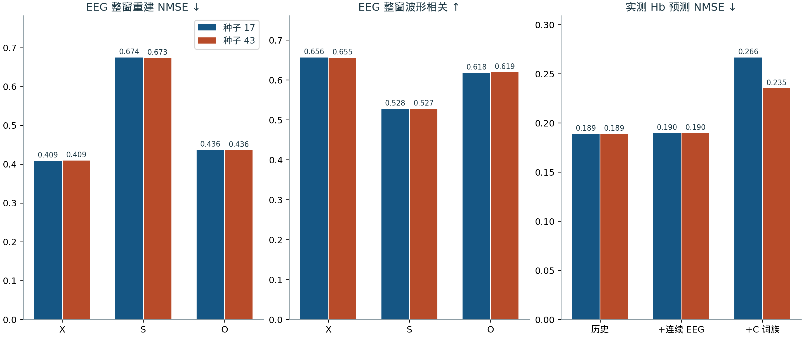
四库 60 名训练人用于标定和拟合读出，在 16 名普通开发人、53,476 个 EEG 窗口×位置上评价。X 是观测输入，S/O 是冻结教师给出的成分目标。两种子宏 X 相关均约 0.66，包络属性可以从 S 码向量读出。后顶区事件占据变化随种子变号；加入 EEG 词族后，3 人的双色 Hb 误差均升高。以下各页分别核对波形、词、序列和跨模态终点。
single_vq_spectral_location 的两份 C/evaluation/summary.json；本次 events_17、events_43 的 coupling_contrasts.csv。Simultaneous · VP005 · cnt_nback · FC1 · 记录起点后 450.07 秒。沿用历史容量面板在该库 7,952 个完整窗口×位置中按基准误差选取的第 50 百分位样例。
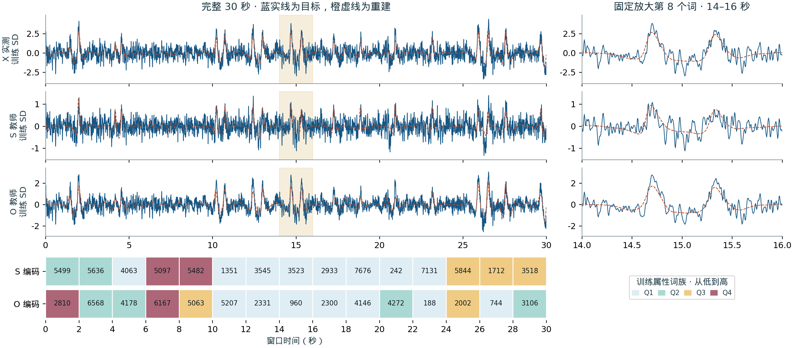
观测 X 的最大绝对幅值出现在 26.54 秒，该点观测为 +4.36、重建为 +2.08 个训练 SD。X、S、O 的整窗归一化均方误差（NMSE）依次为 0.425、0.494、0.437。误差按本位置该目标的训练方差归一化，纵轴统一为本位置观测 X 的训练标准差单位。左右图每行共用纵轴，各行独立。格内为真实整数 ID。底色从浅蓝、青、黄到紫依次为训练属性四分位词族 Q1–Q4；每个分支独立分族。
示例数组 examples/eeg_median.npz；配对身份、原始时标与分母见 examples/windows.json。Simultaneous · VP002 · cnt_wg · POz · 记录起点后 0.03 秒。沿用历史容量面板在该库 7,952 个完整窗口×位置中按基准误差选取的第 95 百分位样例。
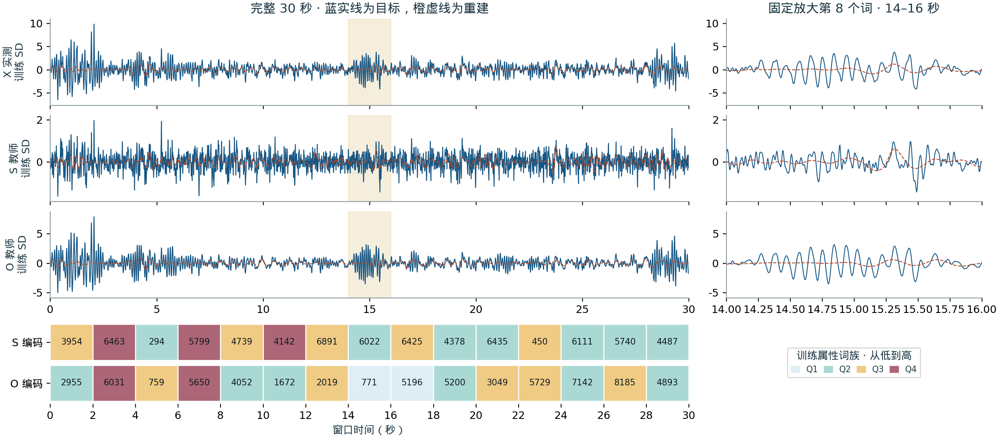
观测 X 的最大绝对幅值出现在 2.06 秒，该点观测为 +9.85、重建为 +0.12 个训练 SD。X、S、O 的整窗归一化均方误差（NMSE）依次为 1.567、0.692、2.276。误差按本位置该目标的训练方差归一化，纵轴统一为本位置观测 X 的训练标准差单位。左右图每行共用纵轴，各行独立。格内为真实整数 ID。底色从浅蓝、青、黄到紫依次为训练属性四分位词族 Q1–Q4；每个分支独立分族。
示例数组 examples/eeg_difficult.npz；配对身份、原始时标与分母见 examples/windows.json。Simultaneous · VP014 · cnt_nback · POOz · 记录起点后 1709.67 秒。沿用历史容量面板在该库 10,201 个完整窗口×位置中按基准误差选取的第 50 百分位样例。
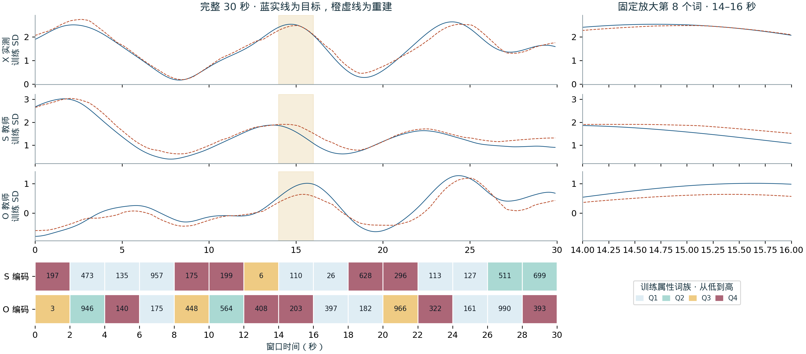
观测 X 的最大绝对幅值出现在 24.00 秒，该点观测为 +2.63、重建为 +2.48 个训练 SD。X、S、O 的整窗归一化均方误差（NMSE）依次为 0.011、0.037、0.073。误差按本位置该目标的训练方差归一化，纵轴统一为本位置观测 X 的训练标准差单位。左右图每行共用纵轴，各行独立。格内为真实整数 ID。底色从浅蓝、青、黄到紫依次为训练属性四分位词族 Q1–Q4；每个分支独立分族。
示例数组 examples/hb_median.npz；配对身份、原始时标与分母见 examples/windows.json。Simultaneous · VP014 · cnt_nback · POOz · 记录起点后 1709.67 秒。沿用历史容量面板在该库 10,201 个完整窗口×位置中按基准误差选取的第 50 百分位样例。
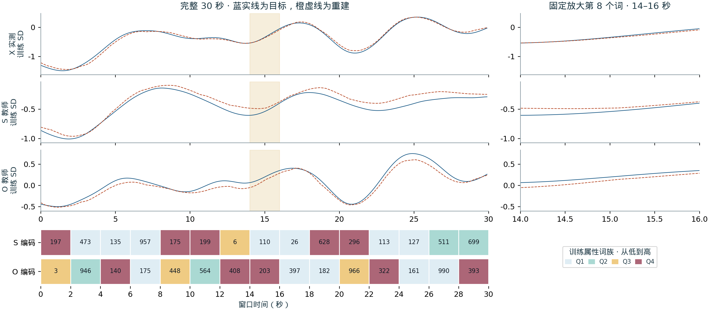
观测 X 的最大绝对幅值出现在 1.50 秒，该点观测为 -1.49、重建为 -1.44 个训练 SD。X、S、O 的整窗归一化均方误差（NMSE）依次为 0.016、0.069、0.342。误差按本位置该目标的训练方差归一化，纵轴统一为本位置观测 X 的训练标准差单位。左右图每行共用纵轴，各行独立。格内为真实整数 ID。底色从浅蓝、青、黄到紫依次为训练属性四分位词族 Q1–Q4；每个分支独立分族。
示例数组 examples/hb_median.npz；配对身份、原始时标与分母见 examples/windows.json。Simultaneous · VP002 · cnt_nback · AFF6 · 记录起点后 1347.77 秒。沿用历史容量面板在该库 10,201 个完整窗口×位置中按基准误差选取的第 95 百分位样例。
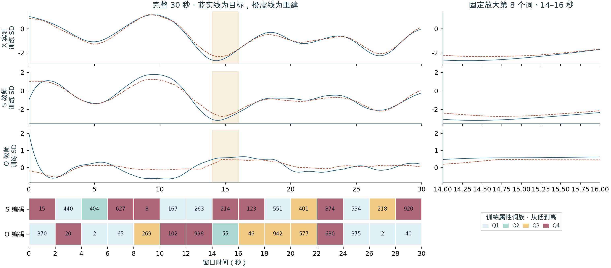
观测 X 的最大绝对幅值出现在 14.30 秒，该点观测为 -2.66、重建为 -2.30 个训练 SD。X、S、O 的整窗归一化均方误差（NMSE）依次为 0.011、0.102、0.172。误差按本位置该目标的训练方差归一化，纵轴统一为本位置观测 X 的训练标准差单位。左右图每行共用纵轴，各行独立。格内为真实整数 ID。底色从浅蓝、青、黄到紫依次为训练属性四分位词族 Q1–Q4；每个分支独立分族。
示例数组 examples/hb_difficult.npz；配对身份、原始时标与分母见 examples/windows.json。Simultaneous · VP002 · cnt_nback · AFF6 · 记录起点后 1347.77 秒。沿用历史容量面板在该库 10,201 个完整窗口×位置中按基准误差选取的第 95 百分位样例。
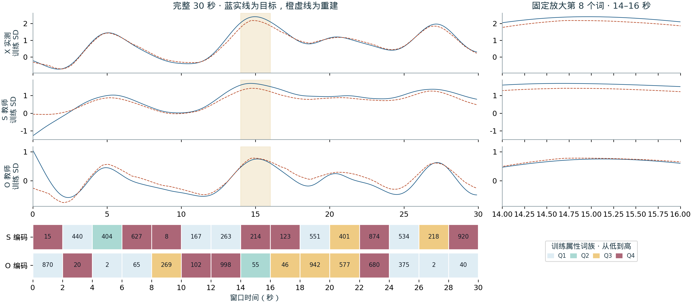
观测 X 的最大绝对幅值出现在 15.00 秒，该点观测为 +2.41、重建为 +2.18 个训练 SD。X、S、O 的整窗归一化均方误差（NMSE）依次为 0.112、0.792、2.739。误差按本位置该目标的训练方差归一化，纵轴统一为本位置观测 X 的训练标准差单位。左右图每行共用纵轴，各行独立。格内为真实整数 ID。底色从浅蓝、青、黄到紫依次为训练属性四分位词族 Q1–Q4；每个分支独立分族。
示例数组 examples/hb_difficult.npz；配对身份、原始时标与分母见 examples/windows.json。同一 2 秒教师目标，在数据集、电极和可见 X 的 RMS 分箱相同的背景下评分。包络取八段 250 ms RMS，先平均八个坐标的平方误差。两个种子在同一批开发人上评价。
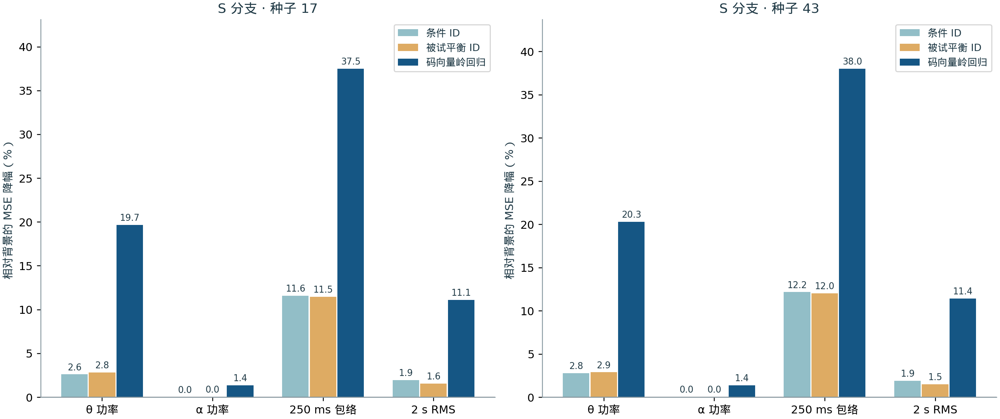
柱高为 100 ×（1 − 方法 MSE / 对应背景 MSE），正值表示误差下降。类别读出将训练中的背景×ID 均值向背景收缩，被试平衡版在每格先按人平均；码向量读出对背景残差拟合线性岭回归。各属性的强度由训练被试三折选取。先均有效片段，再等权汇总位置、窗、记录、被试和库。
readout_17_S、readout_43_S 下的 scores.csv、selection.json、support.json；decoded 行为直接解码属性误差。同一 2 秒教师目标，在数据集、电极和可见 X 的 RMS 分箱相同的背景下评分。包络取八段 250 ms RMS，先平均八个坐标的平方误差。两个种子在同一批开发人上评价。
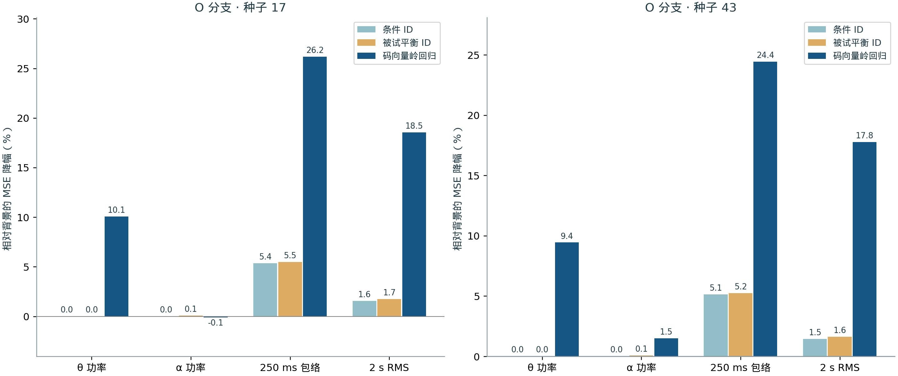
柱高为 100 ×（1 − 方法 MSE / 对应背景 MSE），正值表示误差下降。类别读出将训练中的背景×ID 均值向背景收缩，被试平衡版在每格先按人平均；码向量读出对背景残差拟合线性岭回归。各属性的强度由训练被试三折选取。先均有效片段，再等权汇总位置、窗、记录、被试和库。
readout_17_O、readout_43_O 下的 scores.csv、selection.json、support.json；decoded 行为直接解码属性误差。用同一开发教师 S 片段作目标。一种方法用训练数据学习读出，另一种直接把整数解码成 200 Hz 波形后重算相同属性。虚线 1 对应背景均值的误差；点低于 1 表示改善。
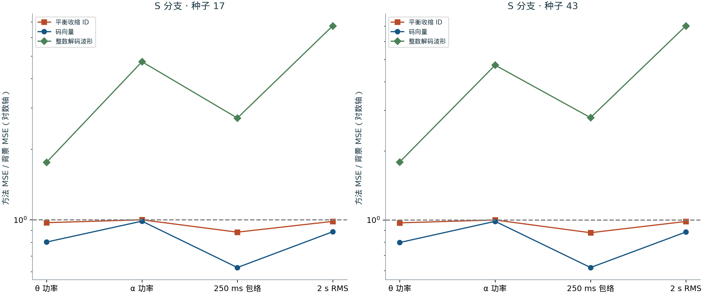
两个种子的码向量包络 MSE 比背景低 37.5% / 38.0%，直接解码后却达到背景的 2.72 / 2.79 倍。以整段 RMS 衡量，直接解码误差约为背景的 6.73 / 7.03 倍。原频谱实验另按库的训练均值和标准差标定对数功率，解码 log-α MSE 为 102.13 / 102.54；它使用另一种属性和尺度。
readout_17_S、readout_43_S 的 scores.csv；对数谱来自两种子 C/evaluation/summary.json。上排比较 8192 个词与开发片段的覆盖率。下排的点和线段分别是匹配样本的中位数和第 10–90 百分位。每个示例词最多抽 128 个开发成员，与同人、同位置、同 RMS 分箱的其他词配对。
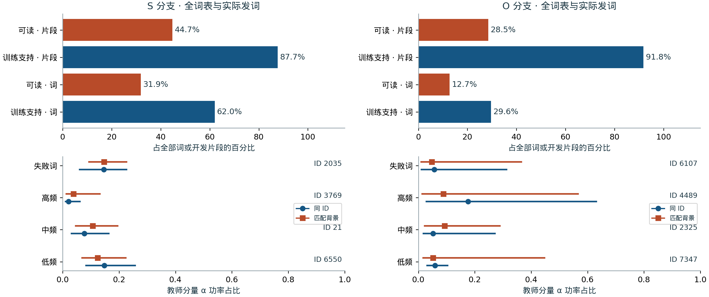
训练支持要求至少 20 个片段和 3 人。可读词还要求至少 3 名开发人、逐人平均误差改善且过半数人改善，覆盖率包含开发筛选。前三个词按合格词的训练频数第 10、50、90 百分位选择；失败词是有开发支持且平均误差恶化最大的词。词内分布和匹配背景的重叠保留在图中。
eeg_17 下的 S/O_words.csv、S/O_members.csv、coverage.csv；逐个真实成员波形见后页。细灰线是固定随机样本中前三个真实开发成员；粗线是该组成员或配对背景的均值。每幅图沿用实际幅度，独立纵轴。
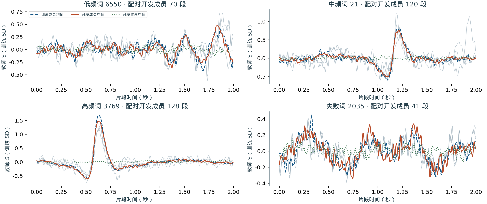
跨片段相位差会压低平均波形的振幅。灰线显示单个成员仍可有明显起伏；判定词的属性偏好还需结合上一页的成员分布及全体支持量。各例对应的实测 X 与时间中心化视图也保存在同一成员目录。
eeg_17/S_member_waves.npz、S_members.csv、S_wave_template.csv。细灰线是固定随机样本中前三个真实开发成员；粗线是该组成员或配对背景的均值。每幅图沿用实际幅度，独立纵轴。
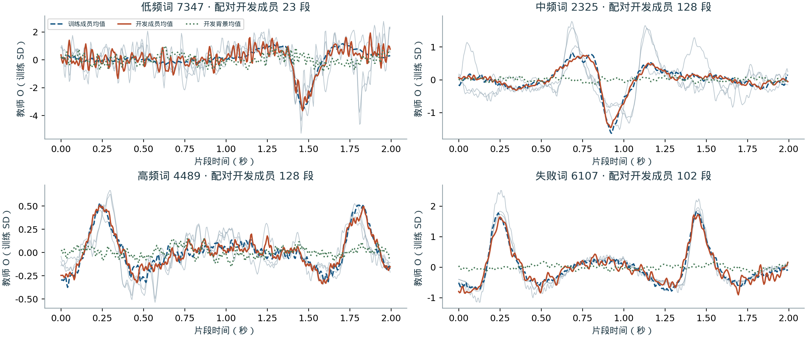
跨片段相位差会压低平均波形的振幅。灰线显示单个成员仍可有明显起伏；判定词的属性偏好还需结合上一页的成员分布及全体支持量。各例对应的实测 X 与时间中心化视图也保存在同一成员目录。
eeg_17/O_member_waves.npz、O_members.csv、O_wave_template.csv。上排比较 8192 个词与开发片段的覆盖率。下排的点和线段分别是匹配样本的中位数和第 10–90 百分位。每个示例词最多抽 128 个开发成员，与同人、同位置、同 RMS 分箱的其他词配对。
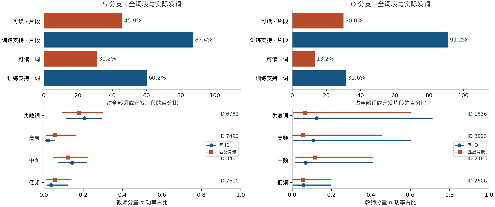
训练支持要求至少 20 个片段和 3 人。可读词还要求至少 3 名开发人、逐人平均误差改善且过半数人改善，覆盖率包含开发筛选。前三个词按合格词的训练频数第 10、50、90 百分位选择；失败词是有开发支持且平均误差恶化最大的词。词内分布和匹配背景的重叠保留在图中。
eeg_43 下的 S/O_words.csv、S/O_members.csv、coverage.csv；逐个真实成员波形见后页。细灰线是固定随机样本中前三个真实开发成员；粗线是该组成员或配对背景的均值。每幅图沿用实际幅度，独立纵轴。
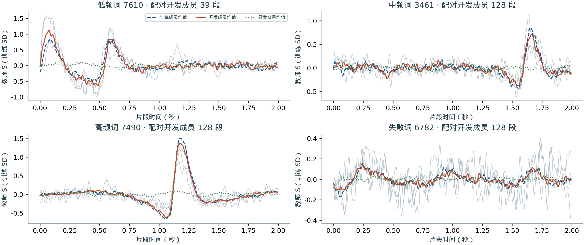
跨片段相位差会压低平均波形的振幅。灰线显示单个成员仍可有明显起伏；判定词的属性偏好还需结合上一页的成员分布及全体支持量。各例对应的实测 X 与时间中心化视图也保存在同一成员目录。
eeg_43/S_member_waves.npz、S_members.csv、S_wave_template.csv。细灰线是固定随机样本中前三个真实开发成员；粗线是该组成员或配对背景的均值。每幅图沿用实际幅度，独立纵轴。
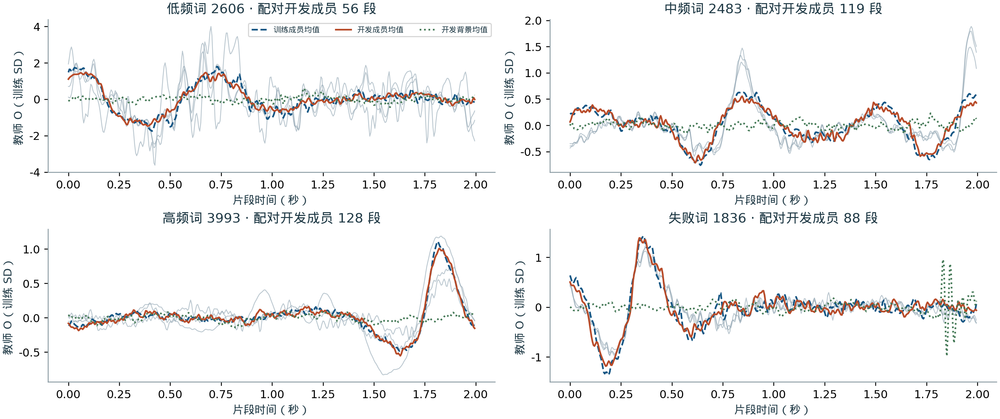
跨片段相位差会压低平均波形的振幅。灰线显示单个成员仍可有明显起伏；判定词的属性偏好还需结合上一页的成员分布及全体支持量。各例对应的实测 X 与时间中心化视图也保存在同一成员目录。
eeg_43/O_member_waves.npz、O_members.csv、O_wave_template.csv。在 16 名开发人共 31,546 个完整窗口×位置中，31,226 个有同人、同记录、同电极且时间不重叠的供体。固定随机种子，每人最多抽 32 个，共 512 对。原始中心保留在第 8 格，两侧均换为该供体上下文。
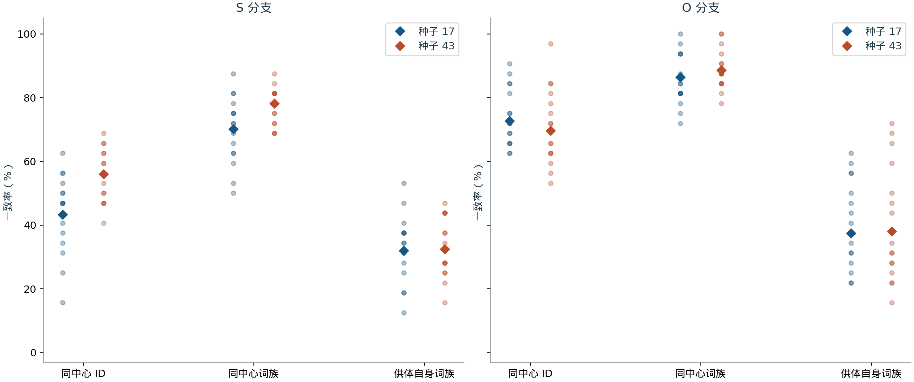
S 的 ID 一致率为 43.3% / 56.0%，词族为 70.1% / 78.1%；O 的对应值为 72.7% / 69.6% 与 86.3% / 88.5%。淡点是一人，菱形是先按人、再按库等权的均值。前两列分别比较替换前后的整数与训练词族，第三列比较原窗口中心与供体自身中心的词族。原信号重复编码的一致率为 100%。替换可能在拼接处产生不连续，测到的是此扰动下的上下文敏感度。
context_support.csv、context.csv。逐窗保留原词、新词、词族一致性与训练属性均值漂移。固定随机顺序的第一对 · Single-Trial · subject_01 · session_01 · AFp2。两条实测输入波形用同一纵轴；黄色区为同一个 2 秒片段。
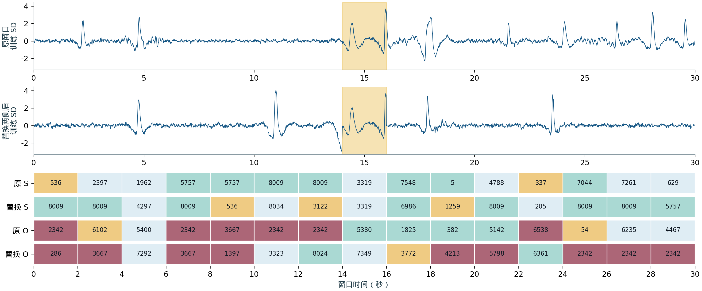
在第 8 格比较上下两行，即可观察同一中心是否换词。其他格同时改变了局部波形与上下文。格内为真实整数 ID。底色从浅蓝、青、黄到紫依次为训练属性四分位词族 Q1–Q4；每个分支独立分族。
context_example_17.npz、context.csv；此页为机制示例，发生比例见前页。输出分别取实测 X、教师 S、教师 O 的 α 占比。背景固定为库、电极和可见 X 的 RMS 分箱。先加入单个分支的码向量，再加入另一分支；最后一组在两个分支和各自词族主效应上加入词族交互。
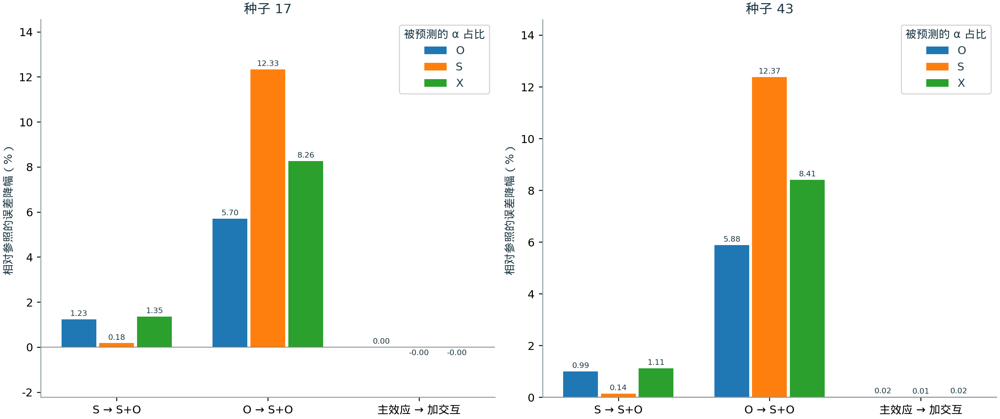
对实测 X，S 后加入 O 的误差下降 1.35% / 1.11%（种子 17 / 43），分别有 13 / 16、12 / 16 人改善。进一步控制两个词族的非线性主效应后，交互增益为 −0.005% / +0.020%，两组配对误差差值的区间均跨零。Hb 沿用原模型，同口径的实测 HbO 斜率条件增益为 40.80% / 37.29%。
eeg_17、eeg_43 下的 conditional.csv、interaction_vs_family_main.csv；Hb 引自 single_vq_relations 的 hb_17、hb_43。在 31,546 个 15 格均有效的开发窗口×位置内，逐一计数 14 对相邻词族。行表示当前族、列表示下一族；每行和为 1。四幅图共享色标，数字为条件概率。
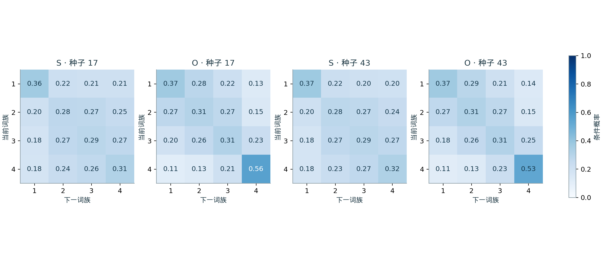
词族 Q1–Q4 按训练时教师分量的 α 占比由低到高分组。对角线表示连续两个词落在同一族，也可以是不同整数。统计按实际转移次数加权；同一被试和同一时间的多个电极产生多个转移。图描述相邻结构，顺序的预测价值见下一页。
examples/transitions.csv；词族映射见各模型 S_family.json 和 O_family.json。用 14 个训练标定词族预测实测 X 的 α 占比。左侧取前 14 格预测本窗第 15 格，编码器已见全窗。右侧取本窗后 14 格预测同记录同电极下一不重叠窗的第一格。两侧均只用训练人拟合岭回归。
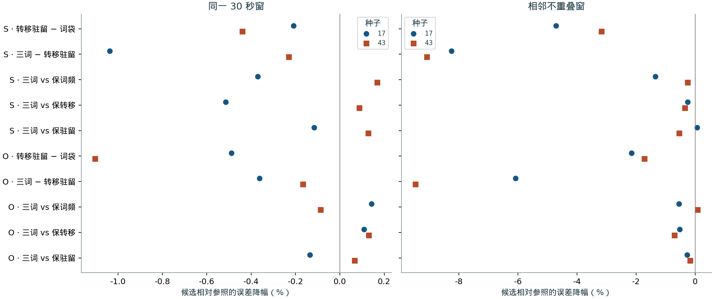
相邻窗中，S 的转移＋驻留相对词袋使误差升高 4.71% / 3.17%，再加三词计数又升高 8.24% / 9.08%。相邻训练配对仅 629 个窗口×位置，开发配对 28,106 个。后三行对照使用已拟合的三词模型，每窗 10 次置换，分别保留词频、有向转移或分族驻留结构。
eeg_17、eeg_43 下的 sequence.csv、sequence_subject.csv；gain 正值表示真实候选优于参照。连续参照先用训练 X 属性的四分位阈值，把每个实测 2 秒片段分为四档，然后采用相同历史长度、描述符和训练回归。EEG 预测 α 占比，Hb 预测 HbO 斜率。
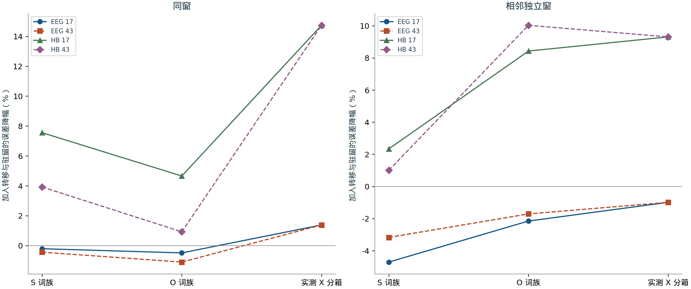
每个点都是相对该输入自身词袋基线的误差降幅。实测参照与 tokenizer 种子无关，同模态两点重合。Hb-S 在相邻窗口中仍有较小的低阶顺序增益；EEG-S 的结果在两个 C 种子上方向一致。
各模型的 observed_sequence_reference.csv、sequence_subject.csv；Hb 为沿用证据。Single-Trial 有 5 名开发被试、每人 60 个心算或显式基线提示。四库的 16 名开发人是 tokenizer 面板总人数；独立事件与实测 Hb 只使用含对应提示、区域和记录的 Single-Trial。
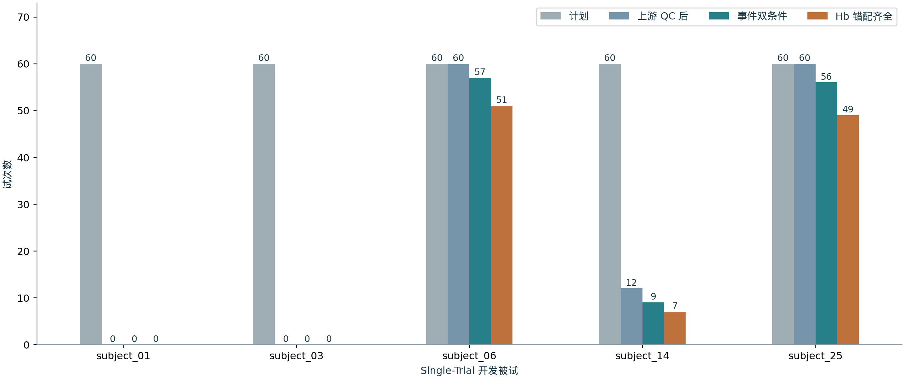
计划 300 次。01、03 号各 60 次及 14 号 48 次被上游同步质控排除，剩 132 次；其中 124 次具备完整事件窗，122 次属于同一会话有两种条件的配对支持，覆盖 7 个会话。另一路 Hb 预测有 109 次通过对齐和移位初筛，最终 107 次可匹配同条件供体。两条终点分别筛选。
development_event_ledger.csv、events_17/event_support.csv、upstream_event_exclusions.csv、coupling_pairs.csv；两个种子身份一致。按各自的 EEG/Hb 原生提示时钟取窗。横轴为提示后秒数的阶段区间，阶段等距绘制。淡线为被试，粗线为 3 人均值。主对照先算每试次 2–10 秒相对 −4–0 秒变化，再在同会话作心算减显式基线、按会话和人等权。
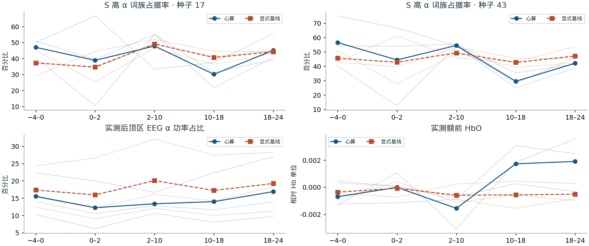
种子 17 的占据差为 +2.85 个百分点，描述性 95% 区间 [−7.08, +13.55]；种子 43 为 −7.54，[−29.17, +15.76]。两个双侧精确被试符号翻转检验均为 p=0.75。原始连续 EEG α 占比的同窗条件差为 −1.37 个百分点，区间 [−2.85, +0.69]，此面板也未清楚建立连续主效应。
events_17、events_43 中的 event_profile.csv、event_contrasts.csv；占据率是 P3/P4 两电极落入训练最高四分位词族的比例。每点是一人的试次相关。先求各试次活动期相对提示前的变化量，再分别减去该人同会话、同条件的平均变化，最后计算高 α 词族占据变化与连续测量变化的 Pearson 相关。
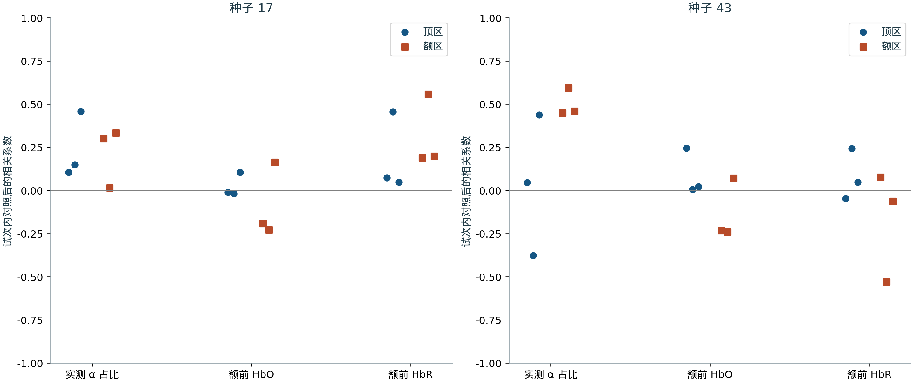
横向散开用于显示重叠点。α 占比来自相应区域的实测 EEG，HbO/HbR 来自固定额前区域。该探索性相关排除了会话和条件平均差，仍依赖同一批 3 人；跨模态的预测增量由独立的 Hb 历史对照检验。
events_17/event_associations.csv、events_43/event_associations.csv。Single-Trial · subject_06 · session_01 · 事件 2 · 种子 17。取两项终点均可评分、且两条件齐全的首个被试会话，再取每种条件时间最早的一次。每行都以本模态的提示为 0 秒。
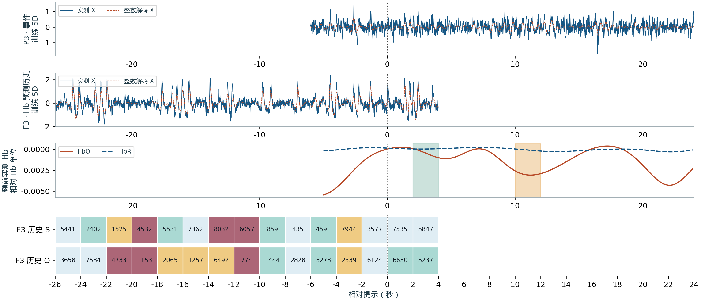
P3 事件窗与 F3 历史窗分别从完整 X 重新编码。底行与第二行共享横轴，每格 2 秒。Hb 目标为橙区 [10,12) 秒实测均值减绿区 [2,4) 秒均值；Hb 颜色为两侧额前位置均值。波形是离线预处理后的实测输入，稠密采样时间与 2 秒词格分别保留。格内为真实整数 ID。底色从浅蓝、青、黄到紫依次为训练属性四分位词族 Q1–Q4；每个分支独立分族。
examples/trial_selection.csv、trial_BL.npz；原生 EEG 与 Hb 标记秒数单独保存在表中。Single-Trial · subject_06 · session_01 · 事件 3 · 种子 17。取两项终点均可评分、且两条件齐全的首个被试会话，再取每种条件时间最早的一次。每行都以本模态的提示为 0 秒。
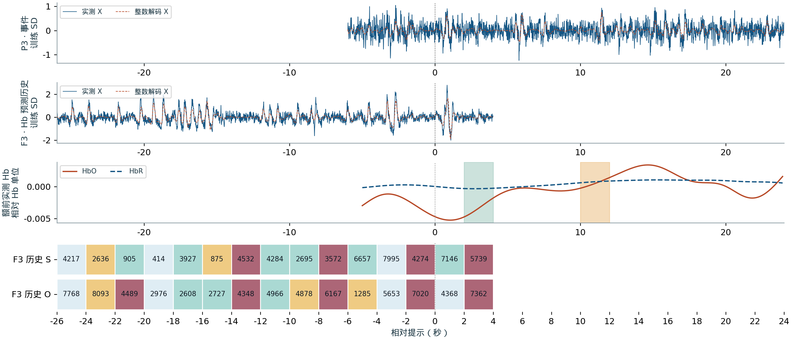
P3 事件窗与 F3 历史窗分别从完整 X 重新编码。底行与第二行共享横轴，每格 2 秒。Hb 目标为橙区 [10,12) 秒实测均值减绿区 [2,4) 秒均值；Hb 颜色为两侧额前位置均值。波形是离线预处理后的实测输入，稠密采样时间与 2 秒词格分别保留。格内为真实整数 ID。底色从浅蓝、青、黄到紫依次为训练属性四分位词族 Q1–Q4；每个分支独立分族。
examples/trial_selection.csv、trial_MA.npz；原生 EEG 与 Hb 标记秒数单独保存在表中。先用 14 名训练人的 614 个配对试次按人三折为历史基线在 2、4、6 秒中选延迟，选中 6 秒。基线含双颜色最近三个 2 秒均值、条件、会话及试次序号。EEG 增广使用 F3/F4 最近三格与整窗摘要。
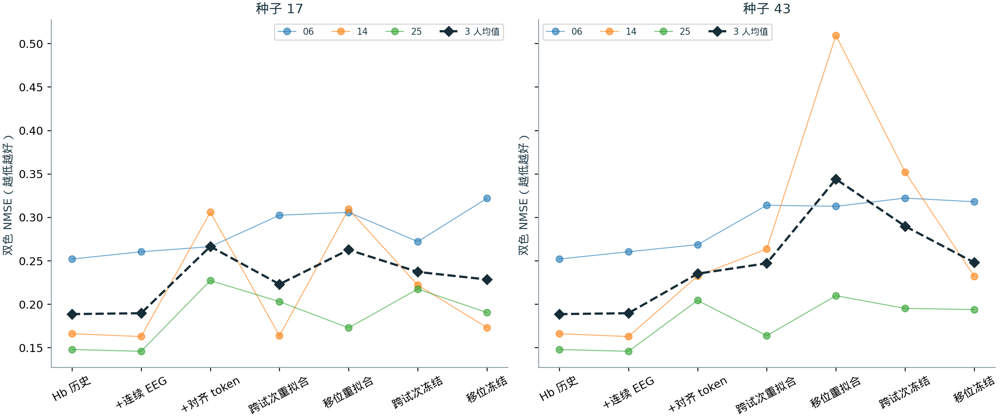
在同一批 107 个开发试次上，历史基线为 0.18861，加入连续 EEG 为 0.18963，加入对齐 C 为 0.26641 / 0.23512。平方误差除以该颜色训练目标方差，先均衡会话内两条件，再按会话、被试和颜色平均。错配固定人、会话、条件；移位为同记录 −43 秒。“冻结”沿用对齐回归系数，另两项重拟合。离线全记录滤波限制了时序推断。
events_17、events_43 中的 events_summary.json、coupling_subject.csv、coupling_contrasts.csv、coupling_predictions.csv。点是 3 人等权的后顶区变化差。线段是被试配对重采样 2,000 次的描述性百分位 95% 区间。转入和转出按当前格与上一格是否进入或离开训练高 α 族计数。
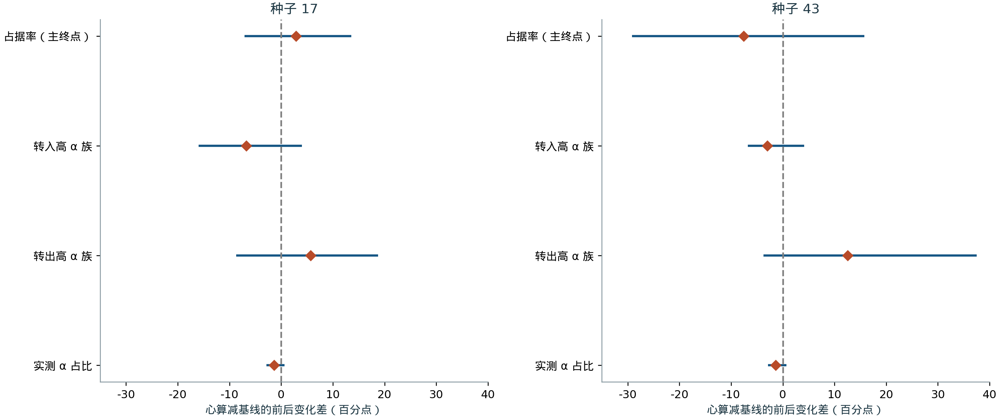
每个阶段都相对同一试次提示前 −4–0 秒，再作同会话心算与显式基线的差。占据率是预定主终点；其他终点用于解释，未作多重比较校正。两种子使用同一批人，不能合并扩大样本量。小样本区间的端点高度依赖这三人。
events_17/event_contrasts.csv、events_43/event_contrasts.csv。每个面板含 107 个试次，每个试次对应一个实测变化值和两个预测。对角线是预测值等于实测值。每种颜色在两种子上使用相同坐标，HbO 和 HbR 各用自身量程。
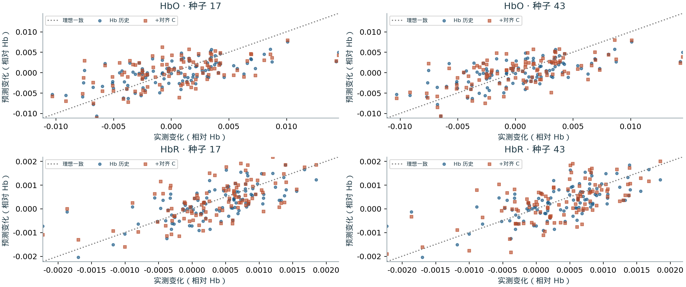
双色合并会掩盖单颜色差异。HbO 的 NMSE 从 0.26292 升至 0.37623 / 0.32142，HbR 从 0.11430 升至 0.15658 / 0.14882。图中每个点按试次展示；误差结论沿用会话内条件平衡、被试等权的统计口径。
events_17、events_43 的 coupling_predictions.csv、coupling_contrasts.csv。